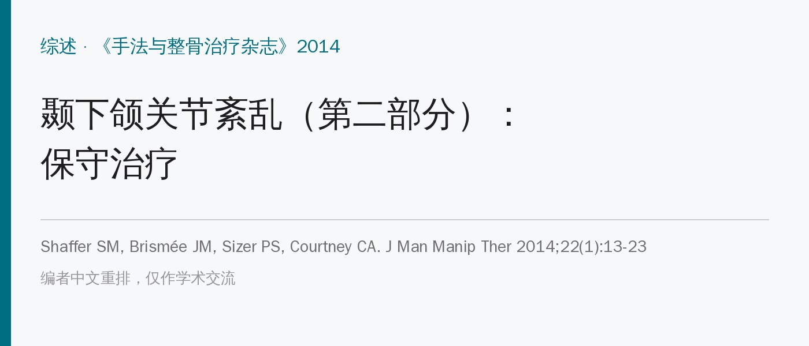
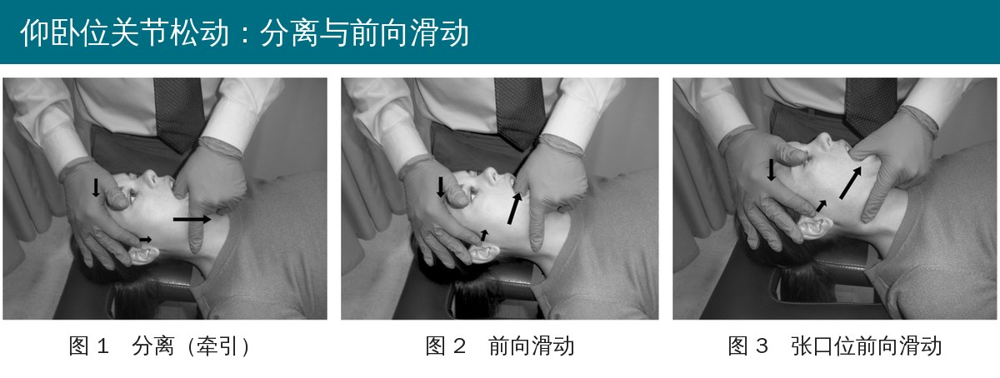
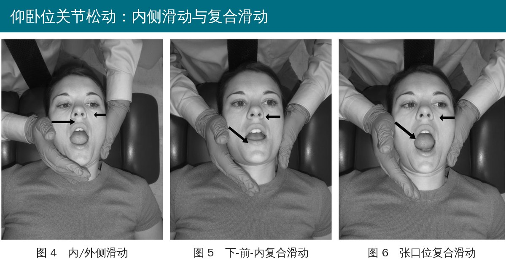
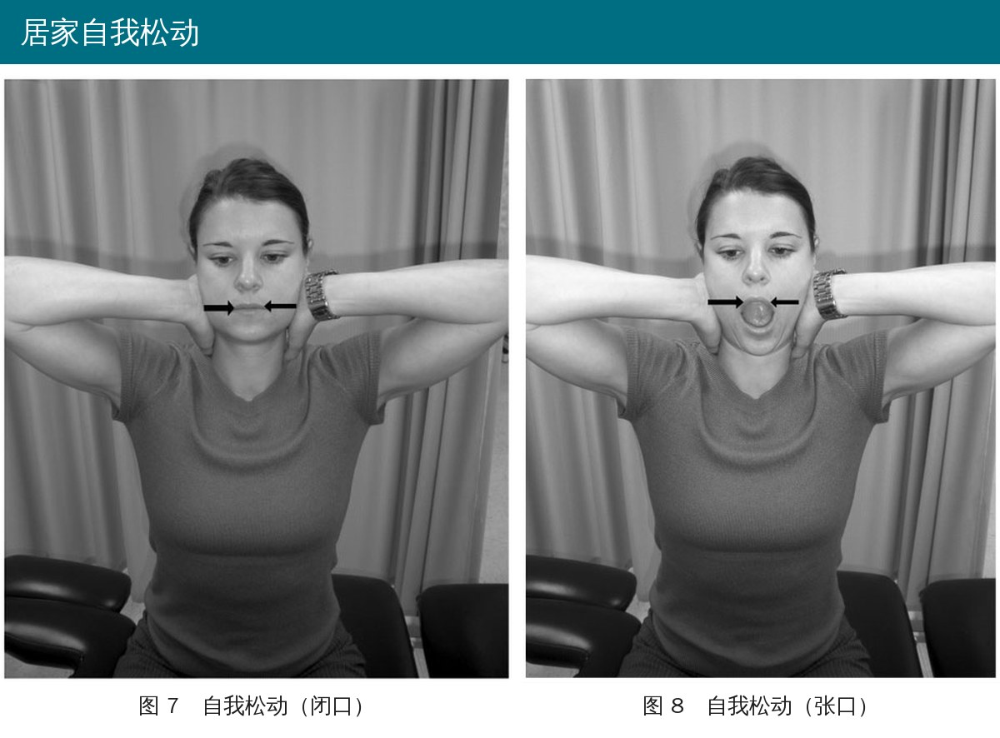
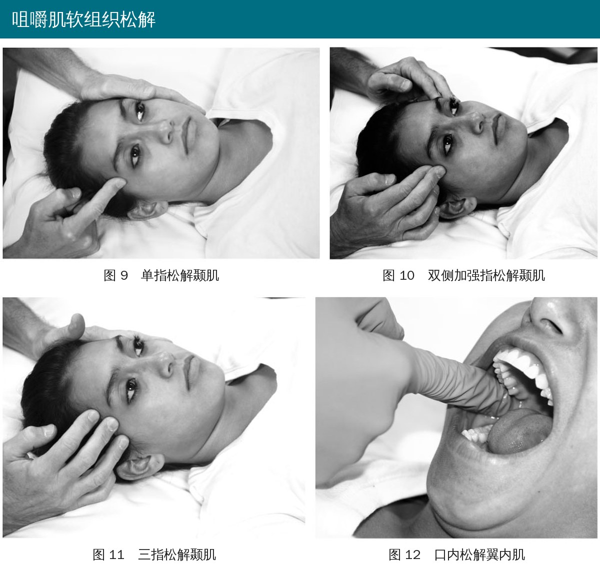

🔖原文信息（编者中文重排）
📚 文献信息
▪ Shaffer SM, Brismée JM, Sizer PS, Courtney CA. Temporomandibular disorders. Part 2: conservative management. J Man Manip Ther. 2014;22(1):13-23. doi:10.1179/2042618613Y.0000000061
▪ 作者来自美国得克萨斯理工大学健康科学中心、伊利诺伊大学芝加哥分校
▪ 两篇系列的第二篇（第一篇讲病理解剖和检查），叙述性综述
颞下颌关节紊乱（TMD）的系统综述和荟萃分析数量少、结论弱，没法直接告诉你“该用什么”。作者的建议是：以检查中发现的具体问题为导向，关节活动受限就松动关节，肌肉紧张就松解软组织，有夜磨牙、紧咬牙就做宣教，治疗前后都复测，这就是“检查—治疗—复查”。
另外要看易激惹程度：症状一碰就加重的，剂量要轻；剂量太保守又会恢复太慢。每次治疗中、治疗后和下次复诊都要复查，随时调整。
关节松动能止痛、改善活动度、缓解肌肉痉挛，甚至可能降低中枢敏化。有关节活动受限时才用；怀疑关节过度活动时就别用，除非只用低级别手法。所有手法都可以在不同张口程度下做。

🔖原文图 1～3。大箭头：治疗力；中箭头：额部稳定力；小箭头：治疗师触摸关节线感受髁突移动
• 手的位置：治疗侧拇指压在同侧下颌磨牙和前磨牙上（戴手套，口内），食指、中指分别托住同侧和对侧下颌体下缘作对抗；另一只手扶住同侧额部向后稳定，同时用手指摸关节线
• 分离（图 1）：拇指向下压磨牙，把髁突从关节窝里“拉开”
• 前向滑动（图 2）：把下颌向前推，带轻微向下的分量
• 张口位前向滑动（图 3）：先让患者张口到一定程度，再做向前、向下的滑动

🔖原文图 4～6。大箭头：治疗力；小箭头：对侧手的稳定力
• 内/外侧滑动（图 4）：一手通过髁突或下颌支向内推，对侧手通过对侧颧弓或髁突稳定
• 下-前-内复合滑动（图 5）：同时向下、向前、向内推髁突或下颌支（原文缩写为 CAM 滑动）
• 张口位复合滑动（图 6）：张口到一定程度后再做复合滑动
• 稳定点选颧弓还是对侧髁突，看患者哪种更舒服
剂量看四点：易激惹程度、受限严重程度、病程长短和患者的反应速度。手法中随时感受组织阻力和症状变化。目前没有研究单独验证颞下颌关节松动的效果，推荐主要基于关节松动在其他关节上的证据。

🔖原文图 7、8：坐位自我松动，闭口位（上下牙不接触）和张口位
• 坐位或仰卧都可以；一侧手推，另一侧手稳定对侧关节
• 闭口版本里上下牙不要咬合
• 力一般通过下颌支施加和稳定，有些人用颧弓稳定更合适
• 可以只教向内推，也可以教向下-前-内的复合方向

🔖原文图 9～12：单指、双侧加强指、三指松解颞肌，以及口内松解翼内肌
• 至少要考虑的四块肌肉：颞肌、咬肌、翼内肌、翼外肌；必要时加上辅助咀嚼肌和颈部肌肉
• 接触方式：单指（图 9）、加强指（食指被中指压着，图 10）、多指（图 11）。单侧做时另一只手扶住头防止晃动；双侧同时做时两手互为对抗。一般从颞肌前缘开始往后推进
• 口内技术：翼内肌（图 12）、翼外肌要从口内做；容易诱发咽反射，尤其是翼外肌。治疗时让患者放松、嘴不必张太大（图里张大是为了展示）
• 干针：疼痛与肌筋膜触发点有关时可以考虑，但需要专门培训
• 横向摩擦按摩：经验上对关节外侧线、关节后间隙、颞肌在冠突的止点以及触发点有用，但没有针对 TMD 的研究
最广为人知的 TMD 练习，原文描述为6 个动作、每天 6 次。但唯一一项疗效研究发现，在自我护理基础上加做 666 练习并没有额外好处。
| 练习 | 做法与目的 |
|---|---|
| 舌的休息位 | 舌前三分之一轻压上腭，让舌和下颌肌放松，并促进腹式呼吸 |
| 控制关节转动 | 舌前三分之一贴着上腭，反复张口、闭口，减少张口、说话、咀嚼时下颌先往前伸的动作 |
| 节律性稳定 | 下颌在休息位，分别向张口、闭口、侧偏方向做轻柔的等长收缩，借交互抑制放松肌肉，通过本体感觉改善下颌休息位 |
| 颈部轴向伸展 | 上颈段屈曲加下颈段伸展，降低颈部肌肉张力 |
| 肩部姿势 | 肩胛后缩、下沉，纠正姿势 |
| 稳定下的点头 | 双手十指交叉扣在颈后固定第 2～7 颈椎，做收下巴点头（不额外屈颈），牵开上颈段 |
第一部分最初是“舌位、齿分开、呼吸、吞咽”四项，目的是抑制咀嚼肌过度用力；后来去掉吞咽，加入晃动、触碰咬合和力量练习。第二部分练下颌运动的神经肌肉控制，第三部分是等长练习。这套练习从未被研究过。
| 练习 | 做法与目的 |
|---|---|
| 舌的休息位 | 除了说话、吃饭，舌尖平时都放在上腭、上门牙后方 |
| 上下牙分开 | 告诉患者保持上下牙分开本身就有治疗作用，也有利于舌的休息位 |
| 鼻-膈式呼吸 | 用鼻呼吸带动膈肌，帮助维持舌和牙齿的位置 |
| 舌上抬加晃动 | 牙不碰也会“绷劲”的人：经常回到休息位，轻轻左右晃动下颌，打断持续收缩；出现弹响就减小幅度 |
| 力量练习 | 用手指顶住下门牙做抗阻闭口，每次收缩 5～10 秒，10 次，每天 3～5 轮 |
| 触碰咬合 | 侧偏：用指尖碰对侧上颌尖牙（右侧偏受限就碰左侧尖牙），再咬手指，带动下颌向手指方向偏；前伸：手指放在上门牙外面重复 |
| 神经肌肉控制 | 髁突前移过多时，舌尖抵住前上腭来界定张口终点，手指轻触下巴和髁突，反复在这个范围内张口闭口；逐步撤掉反馈 |
| 等长练习 | 交互弹响：在闭口弹响出现之前做等长收缩；非结构性的无力或张口偏斜：在任意位置做；为改善活动度抑制肌肉：轻收缩主动肌或拮抗肌 |
作者的总体判断：目前没有证据告诉我们哪些练习有用。很多 TMD 患者本来就咀嚼肌过度用力，所以放松和宣教可能比练习更重要。
• 夜磨牙：普通成人约 20%，TMD 患者可达三分之二；白天紧咬牙多与紧张、压力有关，通常没有磨牙声，患者自己往往知道
• 饮食：越硬、越干的食物需要嚼得越久。症状重的可以先改软食几周到几个月，好转后再逐步试着加硬一点的食物
• 关节过度活动的人：避免张口到末端，比如打哈欠要控制幅度。实用方法：张口时舌尖始终贴住上门牙后方的硬腭，不要张得比这更大
• 心理社会因素：焦虑、压力要处理，必要时转诊；认知行为治疗的研究结果不一，但作为综合管理的一部分可能有帮助
• 患者常常一开始意识不到这些诱因，复诊时要反复追问
| 手段 | 作者的结论 |
|---|---|
| 电刺激（干扰电、经皮神经电刺激） | 止痛效果明确但短暂（可能只有约 30 分钟）；对活动度的帮助比对疼痛大。可作辅助，主要用于易激惹的患者 |
| 肌电生物反馈 | 6 项对照研究中 5 项优于不治疗或安慰治疗；约 70% 的患者明显改善，对照组约 35%。有肌肉激活异常的患者建议尝试 |
| 地塞米松离子导入 | 证据不一：能改善功能，但不比生理盐水更能止痛。个案决定，有效才继续 |
| 治疗性超声 | 缺乏疗效证据，且仪器输出不稳定，不推荐 |
| 咬合板 | 两篇综述都认为证据不足以支持或反对；主要用于保护牙齿 |
| 多模式综合治疗 | 软组织松解、牵伸、等长练习、引导开闭口、关节牵引和松动、姿势纠正、放松训练组合，至少 5 次、每次 30 分钟，对多种 TMD 类型有效 |
| 颈椎 | 所有 TMD 患者都应检查颈椎，有问题就一起处理 |
• 本质是专家综述：标题页写着“系统综述”，但文中没有检索策略、纳入标准和质量评价，是叙述性综述
• 大部分具体手法没有直接证据：关节松动、软组织松解、横向摩擦按摩、Kraus 练习都没有针对 TMD 的单独研究；666 练习唯一的研究是阴性结果
• 有证据的反而是“组合拳”和生物反馈：多模式综合治疗、生物反馈的研究支持相对更多，但单项手段的贡献分不出来
• 颈椎处理、慢性疼痛和中枢敏化的管理作者明确说超出了本文范围
• 标成“系统综述”：首页文章类型写的是 Systematic Review，但没有任何系统检索和质量评价的方法
• 图 6 图注抄错：图 6 是“张口位下-前-内复合滑动”，图注里的大箭头却写成“内侧滑动力”，和图 4 的图注一字不差
• 练习剂量的笔误：Kraus 力量练习写成“每天 3～56 次”，应为 3～5 次
• 666 的名字没说全：正文说 666 是“6 个动作、每天 6 次”，第三个 6 指的是每个动作做 6 次，原文没提
• “两篇系统综述”其中一篇不是：讲咬合板时说两篇系统综述结论相似，引用的文献 74 是《Dental Update》上的一篇普通综述（“为什么、何时、怎么做”），并非系统综述
• 参考文献漏引：讲生物反馈时引用文献 57 后直接跳到 59，文献 58（Crider 1999 的生物反馈荟萃分析）在正文中从未被引用，而“6 项对照研究”的数据更可能出自它
• Kraus 第二部分语句残缺：“The second part is intended to target both neuro-muscular control...”，“both”后面少了另一项
• 电刺激引用重复：“急性疼痛 53 和慢性疼痛 53,54”，同一篇文献被同时用来支持急性和慢性两种情况
• 先检查，再对症：关节受限 → 关节松动 + 自我松动；肌肉问题 → 颞肌、咬肌、翼内肌、翼外肌松解；习惯问题 → 宣教
• 先排除关节过度活动：过度活动的人不做高级别松动，重点教控制张口幅度
• 宣教放在核心位置：舌的休息位、上下牙分开、鼻呼吸、软食、控制打哈欠，比“练多少组”更重要
• 练习从简：666 和 Kraus 练习可以挑与患者问题相关的几项，不必全套照做
• 别忘了颈椎：颞下颌关节问题常与颈椎和头痛相关，一并检查和处理
• 超声不推荐；电刺激、离子导入只作辅助；咬合板主要用来保护牙齿，需要时转诊口腔科
欢迎关注骨科康复小黄公众号，获取更多物理治疗的专业知识！
📄参考文献：
Shaffer SM, Brismée JM, Sizer PS, Courtney CA. Temporomandibular disorders. Part 2: conservative management. J Man Manip Ther. 2014;22(1):13-23. doi:10.1179/2042618613Y.0000000061
原文版权归 W. S. Maney & Son Ltd（2014）所有，未标注开放许可协议。本文为学术交流用的中文解读：手法照片引自原文图 1～12（标注改为中文），表 1、表 2 为编者翻译，理疗与其他手段汇总表为编者整理。版权归原作者与出版方，如有侵权请联系删除。